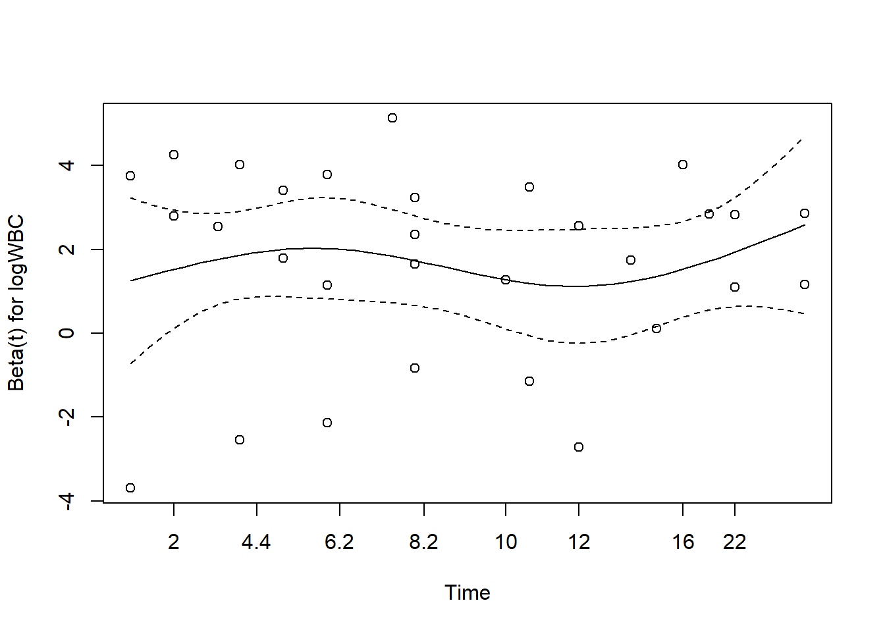
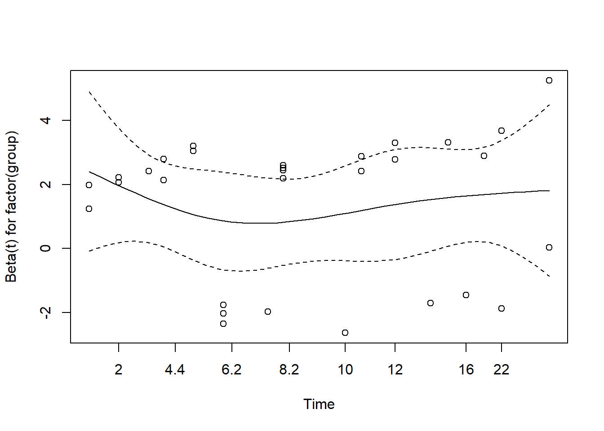
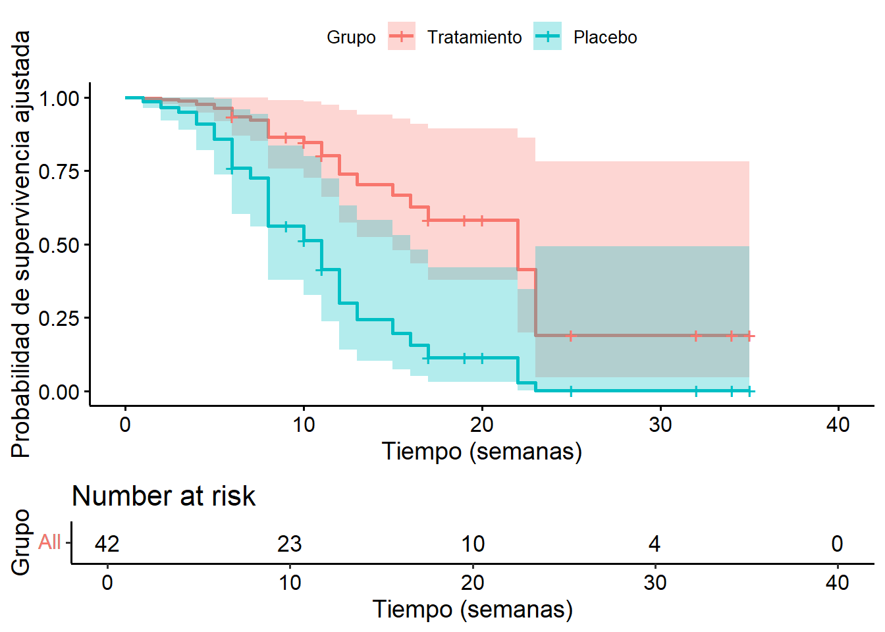

Code
library(survival) # Modelo de Cox y análisis de supervivencia
library(survminer) # Visualización de curvas de supervivencia
library(knitr) # Tablas bonitasEste documento compara modelos de supervivencia con un enfoque especial en el modelo de riesgos proporcionales de Cox. Se utilizan datos simulados o reales para ilustrar el ajuste, la interpretación de coeficientes y la evaluación de supuestos del modelo.
library(survival) # Modelo de Cox y análisis de supervivencia
library(survminer) # Visualización de curvas de supervivencia
library(knitr) # Tablas bonitasleukemia <- data.frame(
time = c(6, 6, 6, 7, 10, 13, 16, 22, 23, 6, 9, 10, 11, 17, 19, 20, 25, 32, 32, 34, 35,
1, 1, 2, 2, 3, 4, 4, 5, 5, 8, 8, 8, 8, 11, 11, 12, 12, 15, 17, 22, 23),
status = c(rep(1, 9), rep(0, 12), rep(1, 21)),
group = c(rep(1, 21), rep(2, 21)),
logWBC = c(2.31, 4.06, 3.28, 4.43, 2.96, 2.88, 3.60, 2.32, 2.57,
3.20, 2.80, 2.70, 2.60, 2.16, 2.05, 2.01, 1.78, 2.20, 2.53, 1.47, 1.45,
2.80, 5.00, 4.91, 4.48, 4.01, 4.36, 2.42, 3.49, 3.97,
3.52, 3.05, 2.32, 3.26, 3.49, 2.12, 1.50, 3.06, 2.30, 2.95, 2.73, 1.97)
)Explicación: Este conjunto representa a pacientes con leucemia, donde time es el tiempo hasta recaída (o censura), status indica si ocurrió el evento (1) o no (0), group es el tratamiento (1 = tratado, 2 = placebo) y logWBC es el logaritmo del conteo de glóbulos blancos.
cox_model <- coxph(Surv(time, status) ~ logWBC + factor(group), data = leukemia)
summary(cox_model)Call:
coxph(formula = Surv(time, status) ~ logWBC + factor(group),
data = leukemia)
n= 42, number of events= 30
coef exp(coef) se(coef) z Pr(>|z|)
logWBC 1.6909 5.4243 0.3359 5.034 4.8e-07 ***
factor(group)2 1.3861 3.9991 0.4248 3.263 0.0011 **
---
Signif. codes: 0 '***' 0.001 '**' 0.01 '*' 0.05 '.' 0.1 ' ' 1
exp(coef) exp(-coef) lower .95 upper .95
logWBC 5.424 0.1844 2.808 10.478
factor(group)2 3.999 0.2501 1.739 9.195
Concordance= 0.852 (se = 0.04 )
Likelihood ratio test= 46.71 on 2 df, p=7e-11
Wald test = 33.6 on 2 df, p=5e-08
Score (logrank) test = 46.07 on 2 df, p=1e-10Explicación: El modelo de Cox ajusta el riesgo de recaída según el tratamiento y logWBC. factor(group) permite comparar placebo contra tratamiento. La salida incluye coeficientes beta, errores estándar, valor z y p-valor.
exp(coef(cox_model)) # Razón de riesgo (HR) logWBC factor(group)2
5.424308 3.999125 exp(confint(cox_model)) # Intervalo de confianza del 95% 2.5 % 97.5 %
logWBC 2.808199 10.477578
factor(group)2 1.739306 9.195048Explicación: Aquí se presentan los coeficientes exponenciados, que se interpretan como razones de riesgo (HR). Un HR > 1 indica mayor riesgo relativo; HR < 1 sugiere efecto protector. El intervalo de confianza permite evaluar si el efecto es estadísticamente significativo (no debe incluir 1).
test_ph <- cox.zph(cox_model)
test_ph chisq df p
logWBC 4.00e-02 1 0.84
factor(group) 8.27e-05 1 0.99
GLOBAL 4.02e-02 2 0.98plot(test_ph)

Explicación: cox.zph verifica si la relación entre covariables y riesgo permanece constante en el tiempo. Un p-valor significativo implica que se viola la suposición de proporcionalidad de riesgos. El gráfico asociado muestra residuos de Schoenfeld.
fit <- survfit(cox_model, newdata = data.frame(logWBC = median(leukemia$logWBC), group = c(1, 2)))
# Graficar curvas
ggsurvplot(
fit,
data = leukemia,
legend.title = "Grupo",
legend.labs = c("Tratamiento", "Placebo"),
xlab = "Tiempo (semanas)",
ylab = "Probabilidad de supervivencia ajustada",
risk.table = TRUE
)
Explicación: Se grafican las curvas de supervivencia estimadas para un paciente con nivel medio de logWBC, comparando tratamiento vs placebo. El risk.table muestra cuántos pacientes permanecen en riesgo a lo largo del tiempo.
logWBC tiene un efecto significativo si su HR difiere de 1 con IC no cruzando el 1.